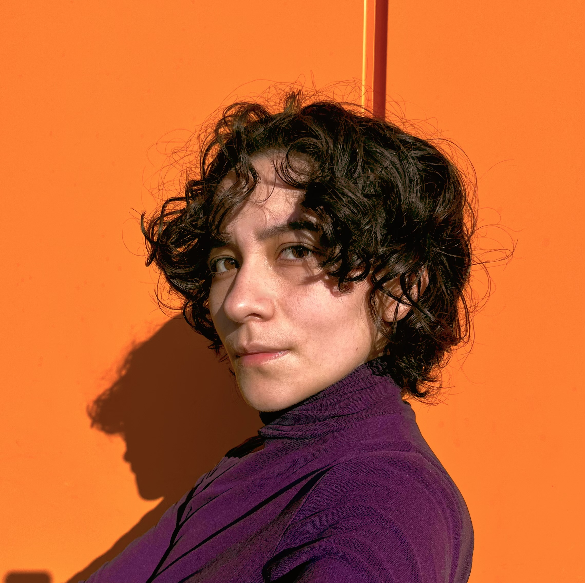

Computational Social Science · Politics
Data Systems for Social Research.
I'm Regina, I work at the intersection of technology and social behavior. Through an interdiciplnary approach I hope to better my understanding on how each shape the other.

About
I am interested in how sets of behavioral data can turn into insights about politics and society.
My research combines statistical methods, employment of LLMs in text-as-data applications, network analysis and traditional social science methods. Recently I have been exploring data system design and fullstack development to build digital infrastructure that is first and foremost GDPR-compliant.
I am currently working on taalbubbl an app to help people learn Dutch through social learning.
- Based inAmsterdam, Netherlands
- FocusPolitical and Social Behavior · Text-as-data
- TechnologiesPython · R · SQL · Rust
Academic trajectory
-
2023 — 2026
BA, Computational Social Science
University of Amsterdam · Amsterdam, Netherlands
Thesis: One Task a Day keeps English Away: How Facilitated L2 Contact via an App Affects Willingness to Communicate in Dutch
-
2021 — 2023
BA, Political Science
University of Amsterdam · Amsterdam, Netherlands
Thesis: Affective Polarization Towards the Redistributive Role of State: A Study of Mexico’s Welfare Policy on Healthcare
Selected Projects
Taalbubbl: Learning Dutch Through Social Interactions
A mobile app designed to facilitate language learning through social interaction.
Algorithms to Predict Coalition Formation in Parliamentary Systems
A set of algorithms to predict coalition formation in The Netherlands.
Roadmap for Change: Railway Sentiment Analysis
An analysis of railway intermobility on how open and closed markets affect consumer behavior.
Skills & Hobbies
Computation & data
Research methods
Visual & creative
Personal interests
Contact
Let’s talk.
rjarillo@gmail.comOpen to career opportunities, research collaborations, and talks.